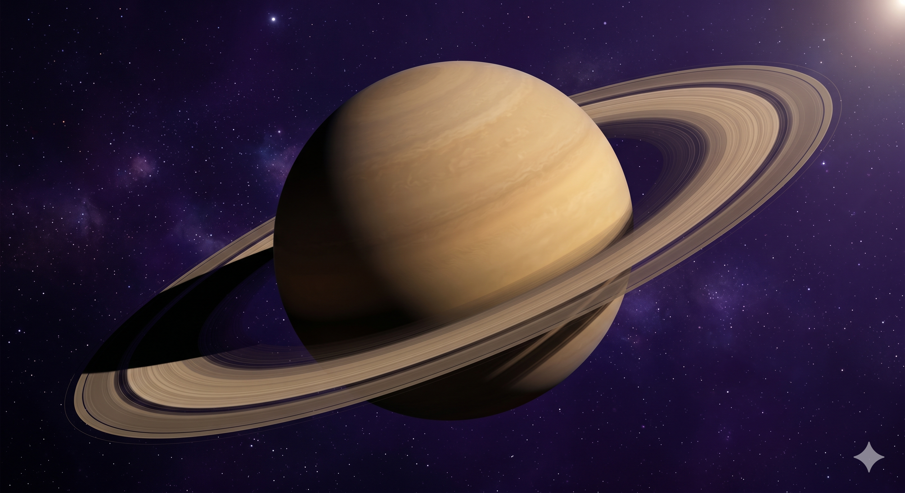
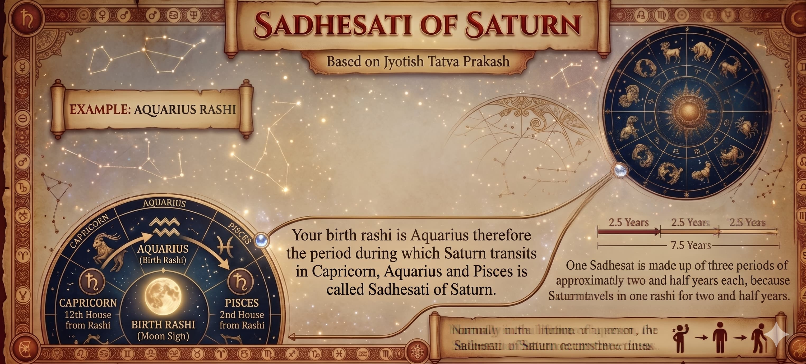
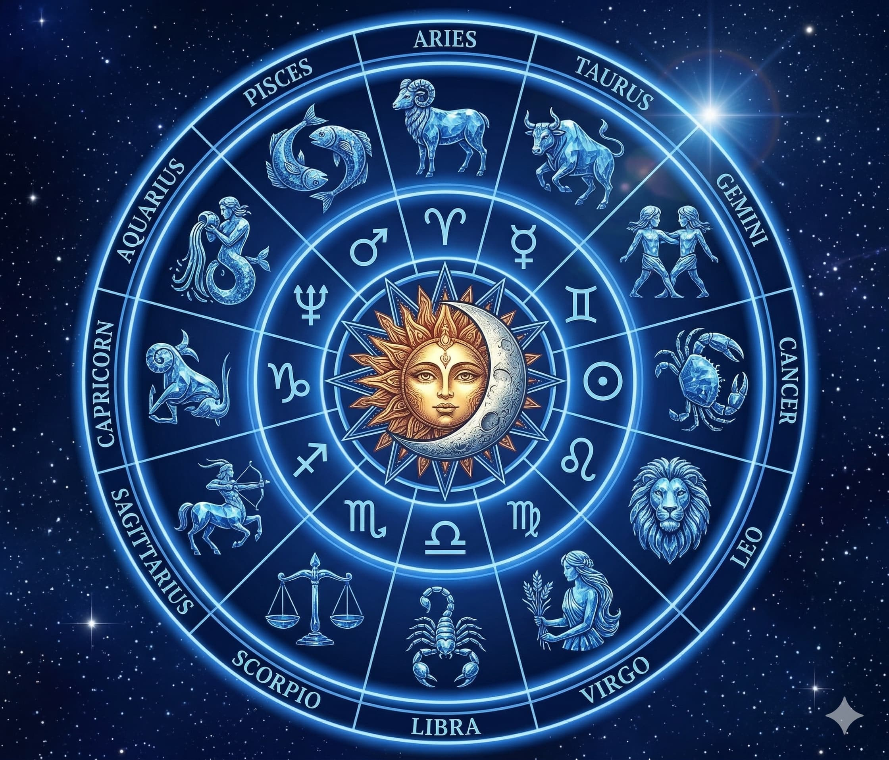
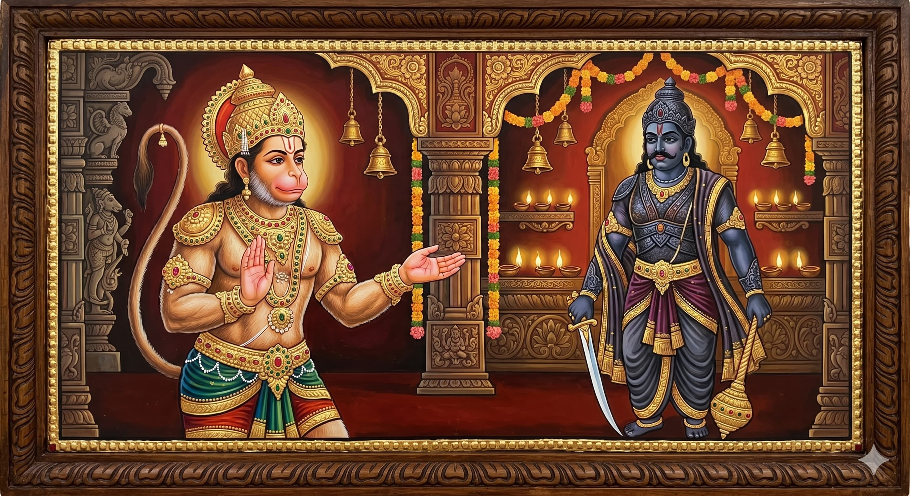

ଏହି ଶବ୍ଦ ସମସ୍ତେ ଜାଣନ୍ତି। ପ୍ରାୟ କେହି ଏହାର ଆସଲ ଅର୍ଥ ବୁଝନ୍ତି ନାହିଁ। ଏବଂ ଏହାର ଚାରିପାଖରେ ଥିବା ଭୟ — ଅଧରାତିର ଗୁଗଲ ସର୍ଚ୍, ଜ୍ୟୋତିଷୀମାନଙ୍କୁ ଚିନ୍ତିତ କଲ — ପ୍ରାୟ ସବୁବେଳେ ବାସ୍ତବତାଠାରୁ ବେଶି ଖରାପ ଅଟେ।

✦ ଶନି — ସେହି ବଳୟ ଥିବା ଗ୍ରହ ଯିଏ କର୍ମ, ସମୟ, ଅନୁଶାସନ, ଓ ସବୁ ବିଷୟର ଧୀର ଅନିବାର୍ଯ୍ୟ ପୁନଃନିର୍ମାଣର ସ୍ୱାମୀ ✦ମୁଁ 16 ବର୍ଷ ହେଲା କୁଣ୍ଡଳୀ ପଢ଼ୁଛି। ଏହି ସମୟରେ ମୁଁ ସାଢେସାତୀକୁ କ୍ୟାରିଅର ନଷ୍ଟ କରିବା, ବିବାହ ଭାଙ୍ଗିବା, ଏବଂ ଲୋକମାନଙ୍କୁ ଆଣ୍ଠେଇ ବସିବାକୁ ଦେଖିଛି। ମୁଁ ଏହାକୁ ସାମ୍ରାଜ୍ୟ ତିଆରି କରିବା, ଅବ୍ୟବସ୍ଥାରୁ ସ୍ପଷ୍ଟତା ସୃଷ୍ଟି କରିବା, ଏବଂ ସବୁ ମିଛ ଗୋଟିକୁ ହଟାଇ ଦେବାକୁ ମଧ୍ୟ ଦେଖିଛି, ଯାହାଦ୍ୱାରା ଅନ୍ତିମରେ କିଛି ଆସଲ ବଢ଼ିପାରେ।
ପରିଣାମ କେବେ ବି ବେତାର୍ତିକ ନୁହେଁ। ଏବଂ ଏହା ପ୍ରାୟ ସେମିତି ବି ହୁଏ ନାହିଁ ଯେମିତି ଲୋକେ ଭୟ କରନ୍ତି।
ସାଢେସାତୀ ବାସ୍ତବରେ କଣ
 ✦ ଶନି — ସେହି ବଳୟ ଥିବା ଗ୍ରହ ଯିଏ କର୍ମ, ସମୟ, ଅନୁଶାସନ, ଓ ସବୁ ବିଷୟର ଧୀର ଅନିବାର୍ଯ୍ୟ ପୁନଃନିର୍ମାଣର ସ୍ୱାମୀ ✦
✦ ଶନି — ସେହି ବଳୟ ଥିବା ଗ୍ରହ ଯିଏ କର୍ମ, ସମୟ, ଅନୁଶାସନ, ଓ ସବୁ ବିଷୟର ଧୀର ଅନିବାର୍ଯ୍ୟ ପୁନଃନିର୍ମାଣର ସ୍ୱାମୀ ✦
ସାଢେ ସାତ — ସାତ ଓ ଅଧା। ଏହାହିଁ ଶବ୍ଦଗତ ଅର୍ଥ। ଏହା ସେହି ସମୟକୁ ବୁଝାଏ ଯେତେବେଳେ ଶନି ତିନି କ୍ରମିକ ରାଶି ମଧ୍ୟରେ ଗୋଚର କରନ୍ତି: ଆପଣଙ୍କ ରାଶି ପୂର୍ବର ରାଶି, ଆପଣଙ୍କ ରାଶି ସ୍ୱୟଂ, ଏବଂ ତା ପରର ରାଶି। ଶନି ପ୍ରତି ରାଶିରେ ପ୍ରାୟ 2.5 ବର୍ଷ ରହନ୍ତି। ତିନି ରାଶି, ପ୍ରତ୍ୟେକରେ 2.5 ବର୍ଷ — ସମୁଦାୟ ସାତ ବର୍ଷ ଅଧା।

✦ ଶନି — ସେହି ବଳୟ ଥିବା ଗ୍ରହ ଯିଏ କର୍ମ, ସମୟ, ଅନୁଶାସନ, ଓ ସବୁ ବିଷୟର ଧୀର ଅନିବାର୍ଯ୍ୟ ପୁନଃନିର୍ମାଣର ସ୍ୱାମୀ ✦ସାଢେସାତୀର ତିନି ପର୍ଯ୍ୟାୟ ସମାନ ନୁହନ୍ତି। ପ୍ରତ୍ୟେକର ଆପଣା ଅଲଗା ସ୍ୱଭାବ, ଅଲଗା ଚାପ, ଏବଂ ଅଲଗା ଶିକ୍ଷା ଅଛି।
ବ୍ୟୟ ଶନି
ଜନ୍ମ ଶନି
ପାଦ ଶନି
ଏବେ କିଏ ସାଢେସାତୀରେ ଅଛନ୍ତି
ଶନି ବର୍ତ୍ତମାନ ମୀନ (Pisces) ରାଶିରେ ଗୋଚର କରୁଛନ୍ତି — ଏବଂ ଫେବୃଆରୀ 2028 ପର୍ଯ୍ୟନ୍ତ ସେଠାରେ ରହିବେ। ଏହାର ଅର୍ଥ ଏବେ ତିନି ଚନ୍ଦ୍ର ରାଶି ସକ୍ରିୟ ଭାବେ ସାଢେସାତୀରେ ଅଛନ୍ତି। ତଳେ ଆପଣଙ୍କ ବୈଦିକ ଚନ୍ଦ୍ର ରାଶି ଯାଞ୍ଚ କରନ୍ତୁ।
ଯଦି ହଁ — ତେବେ ଆପଣ ବର୍ତ୍ତମାନ ସାଢେସାତୀରେ ଅଛନ୍ତି। ଆପଣଙ୍କ ନିର୍ଦ୍ଦିଷ୍ଟ ପର୍ଯ୍ୟାୟ ପାଇଁ ତଳର ଟେବୁଲ ପଢ଼ନ୍ତୁ। ଯଦି ଆପଣଙ୍କ ରାଶି ଧନୁ (Sagittarius) ବା ମକର (Capricorn) ତେବେ ଆପଣ ଅର୍ଧ ସାଢେସାତୀ (ଢାଇୟା) ରେ ହୋଇପାରନ୍ତି। ଟେବୁଲ ତଳର ଭାଗ ଦେଖନ୍ତୁ।

✦ ଶନି ସାଢେସାତୀ ✦| ରାଶି | ପର୍ଯ୍ୟାୟ | କଣ ଆଶା କରିବେ | ପର୍ଯ୍ୟାୟ ଆରମ୍ଭ ଓ ସମାପ୍ତି |
|---|---|---|---|
| କୁମ୍ଭ (Aquarius) | ଅସ୍ତ — ପାଦ ଶନି | ଆର୍ଥିକ ଅଭାବ ଓ ବାକ୍ୟ ସମ୍ବନ୍ଧୀୟ ସମସ୍ୟା ରହିଥାଏ। ପରିବାରରେ ତନାବ ଲାଗିପାରେ। ମାନସିକ ଚାପ ଆଗରୁ ଶୀର୍ଷରେ ପହଞ୍ଚିସାରିଛି — ଏବେ ଖାଲି ଦୃଢ଼ୀକରଣ ବାକି ଅଛି। ସ୍ୱସ୍ତି ନିକଟରେ। ସହ୍ୟ ରଖି କାମ ଜାରି ରଖନ୍ତୁ। | 24 ଜାନୁଆରୀ 2020 - 23 ଫେବୃଆରୀ 2028 |
| ମୀନ (Pisces) | ★ ଶୀର୍ଷ — ଜନ୍ମ ଶନି | ଶନି ସିଧାସଳଖ ଆପଣଙ୍କ ଚନ୍ଦ୍ର ରାଶି ଉପରେ ବସନ୍ତି — ସବୁଠାରୁ ତୀବ୍ର ପର୍ଯ୍ୟାୟ। ଆତ୍ମସନ୍ଦେହ, ମାନସିକ ଥକା, ଏବଂ ସ୍ୱାସ୍ଥ୍ୟ ଉପରେ ଧ୍ୟାନ ଆବଶ୍ୟକ। ସମ୍ବନ୍ଧର ପରୀକ୍ଷା ହୁଏ। ଏହା ଆଭ୍ୟନ୍ତରୀଣ ସ୍ପଷ୍ଟତାର ସବୁଠାରୁ ବେଶି ସମ୍ଭାବନା ଥିବା ପର୍ଯ୍ୟାୟ ମଧ୍ୟ। ଏହାକୁ ଲଢ଼ନ୍ତୁ ନାହିଁ — ଏହା ସହିତ କାମ କରନ୍ତୁ। | 29 ଅପ୍ରେଲ 2022 - 8 ଅଗଷ୍ଟ 2029 |
| ମେଷ (Aries) | ଉଦୟ — ବ୍ୟୟ ଶନି | ସ୍ପଷ୍ଟ କାରଣ ବିନା ଖର୍ଚ୍ଚ ବଢ଼ିବା। ଶୟନରେ ବ୍ୟାଘାତ। ବେଚେନୀ ଓ ଅସ୍ପଷ୍ଟ ଅନୁଭବ ଯେ କିଛି ବଦଳିବା ଆବଶ୍ୟକ। ଚାପ ଏବେ ବାନ୍ଧିବାକୁ ଆରମ୍ଭ ହେଲା — ଗମ୍ଭୀର ଭାବେ ପୁନଃସଂରଚନା ଆରମ୍ଭ ହେବା ପୂର୍ବରୁ ମୂଳଭିତ୍ତିର ପରୀକ୍ଷା ହେଉଛି। | 29 ଫେବୃଆରୀ 2025 - 30 ମେ 2032 |
ଶନି ଢାଇୟା / କଣ୍ଟକ ଶନି
ଆପଣଙ୍କ ଚନ୍ଦ୍ର ରାଶିଠାରୁ ଚତୁର୍ଥ ବା ଅଷ୍ଟମ ଭାବ ଉପରେ ଶନିଙ୍କ ଗୋଚର — ଯାହାକୁ ଢାଇୟା ବା କଣ୍ଟକ ଶନି କୁହାଯାଏ — ସାଢେସାତୀଠାରୁ ଭିନ୍ନ 2.5 ବର୍ଷର ଅବଧି, କିନ୍ତୁ ସାମାନ୍ୟ ନୁହେଁ। କଣ୍ଟକ ଶନିର ଶବ୍ଦଗତ ଅର୍ଥ "ଶନି ଯେପରି କଣ୍ଟା ଭଳି ବ୍ୟବହାର କରନ୍ତି।" ନାମ ଅନୁସାରେ, ଏହି ଗୋଚର ଲାଗି ରହିଥିବା ବାଧାଗୁଡ଼ିକ ସୃଷ୍ଟି କରେ ଯାହା ଜୀବନକୁ ନିରନ୍ତର ସଂଗ୍ରାମ ଭଳି ଅନୁଭବ କରାଏ। ଏହା ସେତେବେଳେ ହୁଏ ଯେତେବେଳେ ଶନି ଆପଣଙ୍କ ଜନ୍ମ ଚନ୍ଦ୍ର ରାଶି (ଚନ୍ଦ୍ର ରାଶି) ଠାରୁ ଚତୁର୍ଥ, ସପ୍ତମ, ଅଷ୍ଟମ, ବା ଦଶମ ଭାବ ମଧ୍ୟରେ ଗତି କରନ୍ତି। ଏହି ସମୟରେ, ଆପଣଙ୍କ ମାର୍ଗରେ ପର୍ଯ୍ୟାପ୍ତ ସଂଘର୍ଷ ଓ ଅପ୍ରତ୍ୟାଶିତ ବାଧାର ଆଶା କରାଯାଇପାରେ।
2026 ରେ, ଯଦି ଆପଣଙ୍କ ରାଶି ଧନୁ (Sagittarius) (ଚତୁର୍ଥ ଭାବ ଗୋଚର) ବା ସିଂହ (Leo) (ଅଷ୍ଟମ ଭାବ ଗୋଚର) ବା ମିଥୁନ (Gemini) (ଦଶମ ଭାବ ଗୋଚର) ବା କନ୍ୟା (Virgo) (ସପ୍ତମ ଭାବ ଗୋଚର), ତେବେ ଆପଣ ବର୍ତ୍ତମାନ ଶନି ଢାଇୟା / କଣ୍ଟକ ଶନି ପ୍ରଭାବରେ ଅଛନ୍ତି। ଏଥିରେ ସାଢେସାତୀର ସାତ ବର୍ଷ ଅଧାର ସମ୍ପୂର୍ଣ୍ଣ ଭାର ନାହିଁ, କିନ୍ତୁ ଏହାକୁ ଅବହେଳା କରିବା ଠିକ ନୁହେଁ। ଗୋଟିଏ କୁଣ୍ଡଳୀ ପଠନ ଆପଣଙ୍କ ନିର୍ଦ୍ଦିଷ୍ଟ ସ୍ଥିତି ଓ ସମୟ ନିଶ୍ଚିତ କରିବ।
| ରାଶି | ଭାବ | କଣ ଆଶା କରିବେ | ପର୍ଯ୍ୟାୟ ଆରମ୍ଭ ଓ ସମାପ୍ତି |
|---|---|---|---|
| ଧନୁ (Sagittarius) | ଚତୁର୍ଥ ଭାବର ଢାଇୟା | ଚତୁର୍ଥ ଭାବ ଗୋଚର: ଅର୍ଧ ଅଷ୍ଟମ, ଘରର ଅସ୍ଥିରତା ଓ ଘର-ସମ୍ପତ୍ତିର ସୁଖରେ ପରିବର୍ତ୍ତନ ଆଣେ ଏବଂ ମାତାକୁ ମଧ୍ୟ ପ୍ରଭାବିତ କରେ। | 29 ମାର୍ଚ୍ଚ 2025 - 23 ଫେବୃଆରୀ 2028 |
| କନ୍ୟା (Virgo) | ସପ୍ତମ ଭାବର ଢାଇୟା | ସପ୍ତମ ଭାବ ଗୋଚର: ସପ୍ତମେଶ ଶନି, ସମ୍ବନ୍ଧର ସମସ୍ୟା ଅଚାନକ ଉତ୍ପନ୍ନ ହୋଇପାରେ, ବିବାହ ସମ୍ବନ୍ଧୀୟ ସମସ୍ୟାକୁ ସହାନୁଭୂତି ଓ ଯତ୍ନ ସହିତ ସମ୍ଭାଳିବାକୁ ପଡ଼ିବ। | 29 ମାର୍ଚ୍ଚ 2025 - 23 ଫେବୃଆରୀ 2028 |
| ସିଂହ (Leo) | ଅଷ୍ଟମ ଭାବର ଢାଇୟା | ଅଷ୍ଟମ ଭାବ ଗୋଚର: ଅଷ୍ଟମେଶ ଶନି ଚ୍ୟାଲେଞ୍ଜିଂ ଏବଂ ସାଥିରେ ଆଣେ — ଅଚାନକ ପରିବର୍ତ୍ତନ, ସ୍ୱାସ୍ଥ୍ୟ ଉପରେ ଧ୍ୟାନ, ଗୁପ୍ତ ବିଷୟ ସାମ୍ନାକୁ ଆସିବା। | 29 ମାର୍ଚ୍ଚ 2025 - 23 ଫେବୃଆରୀ 2028 |
| ମିଥୁନ (Gemini) | ଦଶମ ଭାବର ଢାଇୟା | ଦଶମ ଭାବ ଗୋଚର: ଦଶମେଶ ଶନି କ୍ୟାରିଅରରେ ବାଧା, ବ୍ୟବସାୟରେ ଅଡ଼ୁଆ, ବୃତ୍ତିଗତ ଚ୍ୟାଲେଞ୍ଜ, ଅପ୍ରତ୍ୟାଶିତ ଖର୍ଚ୍ଚ ଓ ଜନସାଧାରଣର ତଦାରଖ ଦେଇପାରେ। | 29 ମାର୍ଚ୍ଚ 2025 - 23 ଫେବୃଆରୀ 2028 |
ସେହି ସତ୍ୟ ଯାହା ଅଧିକାଂଶ ଜ୍ୟୋତିଷୀ ଆପଣଙ୍କୁ କହିବେ ନାହିଁ
ସାଢେସାତୀ ସର୍ବବ୍ୟାପୀ ଭାବେ କଠିନ ନୁହେଁ। ଏହି କଥା ସ୍ୱୟଂ ସେହି ସବୁ କଥା ବିପକ୍ଷରେ ଯାଏ ଯାହା ଆପଣ ଅନଲାଇନରେ ପଢ଼ିବେ — କିନ୍ତୁ 16 ବର୍ଷର କୁଣ୍ଡଳୀ ପଠନ ଏହାହିଁ ନିରନ୍ତର ଦେଖାଏ।
ସାଢେସାତୀର ଅନୁଭବ ତିନି ଗୋଟି ବିଷୟ ଉପରେ ନିର୍ଭର କରେ: ଆପଣଙ୍କ ଜନ୍ମ କୁଣ୍ଡଳୀରେ ଶନିଙ୍କ ସ୍ଥିତି, ଆପଣଙ୍କ ରାଶି ସ୍ୱାମୀ, ଏବଂ ବର୍ତ୍ତମାନ ଦଶା। ଏଥିମଧ୍ୟରୁ କୌଣସି ଗୋଟିକୁ ବଦଳାନ୍ତୁ, ଏକ ମାସ ଅନ୍ତରରେ ଜନ୍ମ ହୋଇଥିବା ଦୁଇ ଲୋକ ପାଇଁ ସମାନ ଗୋଚର ସମ୍ପୂର୍ଣ୍ଣ ଭିନ୍ନ ଅନୁଭବ ହେବ।
ଯେଉଁ ରାଶି ସାଢେସାତୀରେ ପ୍ରାୟ ଭଲ କରନ୍ତି: ମକର (Capricorn), କୁମ୍ଭ (Aquarius), ଓ ତୁଳା (Libra)। ଏହି ରାଶିଗୁଡ଼ିକର ଶନିଙ୍କ ଶକ୍ତି ସହିତ ସ୍ୱାଭାବିକ ସମ୍ବନ୍ଧ ଅଛି — ଶନି ମକର ଓ କୁମ୍ଭର ସ୍ୱାମୀ, ଏବଂ ତୁଳାରେ ଉଚ୍ଚର। ଏହି ଚନ୍ଦ୍ର ରାଶି ପାଇଁ ସାଢେସାତୀ ପ୍ରାୟ ଅନୁଶାସନ, ସ୍ୱୀକୃତି, ଏବଂ ବର୍ଷ ବର୍ଷ ଧରି ଚାଲିଥିବା ମେହନତର ସଫଳତା ଆଣେ। ଅମିତାଭ ବଚ୍ଚନ ତାଙ୍କ ସାଢେସାତୀ ସମୟରେ ସୁପରଷ୍ଟାର ହୋଇଥିଲେ। ଯେଉଁ ସମୟ ସୁପୃଷ୍ଠରେ ସଙ୍କଟ ଭଳି ଦେଖାଗଲା, ତାଙ୍କ ପାଇଁ ଏହା ଗୋଟିଏ ବିରାସତର ନିର୍ମାଣ ଥିଲା।
ଯେଉଁ ରାଶି ଏହାକୁ ସବୁଠାରୁ ବେଶି ଅନୁଭବ କରନ୍ତି: କର୍କଟ (Cancer) ଓ ସିଂହ (Leo)। ଶନି ଚନ୍ଦ୍ର ଓ ସୂର୍ଯ୍ୟର ଶତ୍ରୁ, ଯେଉଁମାନେ କ୍ରମେ କର୍କଟ ଓ ସିଂହର ସ୍ୱାମୀ। ଏହି ଚନ୍ଦ୍ର ରାଶି ପାଇଁ ଚାପ ସତ୍ୟ ଅଟେ ଏବଂ ଶିକ୍ଷାକୁ ଆତ୍ମସାତ କରିବା କଠିନ। କିନ୍ତୁ ଏଠାରେ ବି — ଏହା ସ୍ଥାୟୀ ନୁହେଁ, ଏବଂ ଆତ୍ମସାତ ହେଲେ ଏହି ଶିକ୍ଷାଗୁଡ଼ିକ ସବୁଠାରୁ ମୂଲ୍ୟବାନ ସାବିତ ହୁଅନ୍ତି।
ସେ ସେହି ବିଷୟ ନଷ୍ଟ କରନ୍ତି ଯାହା ଆରମ୍ଭରୁ ହିଁ ଆସଲ ନଥିଲା।
ହଜାର ହଜାର କୁଣ୍ଡଳୀରେ ମୁଁ ଯାହା ନିରନ୍ତର ଲକ୍ଷ୍ୟ କରିଛି: ସାଢେସାତୀରେ ସବୁଠାରୁ ବେଶି ସଂଘର୍ଷ କରିଥିବା ଲୋକେ ସେମାନେ ଥିଲେ ଯେଉଁମାନେ ପୁନଃସଂରଚନାକୁ ବିରୋଧ କରିଥିଲେ। ସେମାନେ ସେହି ବିଷୟ ଧରି ରହିଲେ ଯାହାକୁ ଶନି ସ୍ପଷ୍ଟ ଭାବେ ସମାପ୍ତ କରୁଥିଲେ — ସମ୍ବନ୍ଧ, କ୍ୟାରିଅର, ପରିଚୟ — ଏବଂ ଯେତେ ବିରୋଧ କଲେ, ସେତେ ଯନ୍ତ୍ରଣା ସହିଲେ। ଯେଉଁ ଲୋକେ ଏହା ସହିତ କାମ କଲେ, ସେମାନେ ସେପରି କ୍ୟାରିଅର, ସମ୍ବନ୍ଧ, ଏବଂ ସ୍ପଷ୍ଟତା ସହିତ ବାହାରକୁ ଆସିଲେ ଯାହା ସେମାନେ ଆଉ କୌଣସି ଭାବେ ପାଇ ପାରିଥାନ୍ତେ ନାହିଁ।
ହନୁମାନ ସମ୍ବନ୍ଧ — ରାମାୟଣରୁ
ହନୁମାନ ଚାଲିସା ସାଢେସାତୀ ପାଇଁ ସବୁଠାରୁ ବେଶି ସୁପାରିଶ ହେଉଥିବା ଉପାୟ — ଏବଂ ଏହାର ଗୋଟିଏ କାରଣ ଅଛି, ଏହା ଅନ୍ଧବିଶ୍ୱାସ ନୁହେଁ। ଏହାର ମୂଳ ସ୍ୱୟଂ ରାମାୟଣରେ ଅଛି।
ମାତା ସୀତାଙ୍କ ସହିତ ଭେଟ ପରେ ଯେତେବେଳେ ହନୁମାନ ଲଙ୍କାରୁ ଫେରୁଥିଲେ, ସେତେବେଳେ ତାଙ୍କ ଭେଟ ଶନିଦେବଙ୍କ ସହିତ ହେଲା — ଯାହାଙ୍କୁ ରାବଣ ତାଙ୍କ ମହଲରେ ବନ୍ଦୀ କରି ରଖିଥିଲେ। ହନୁମାନ ଶନିଦେବଙ୍କୁ ବନ୍ଦୀତ୍ୱରୁ ମୁକ୍ତ କଲେ। କୃତଜ୍ଞତାରେ, ଶନି ହନୁମାନଙ୍କୁ ବର ଦେଲେ: ତାଙ୍କୁ ଓ ତାଙ୍କ ଭକ୍ତମାନଙ୍କୁ ଶନିଙ୍କ ଅଶୁଭ ପ୍ରଭାବ କେବେ ବି ପ୍ରତିକୂଳ ଭାବେ ପ୍ରଭାବିତ କରିବ ନାହିଁ।
बल बुद्धि विद्या देहु मोहिं, हरहु कलेश विकार॥ ସ୍ୱୟଂକୁ ବୁଦ୍ଧିହୀନ ଜାଣି, ହେ ବାୟୁ-ପୁତ୍ର, ମୁଁ ଆପଣଙ୍କୁ ସ୍ମରଣ କରୁଛି — ମୋତେ ବଳ, ବୁଦ୍ଧି ଓ ବିଦ୍ୟା ଦିଅ; ମୋର କଷ୍ଟ ଓ ବିକାର ଦୂର କରନ୍ତୁ। — ହନୁମାନ ଚାଲିସା, ଗୋସ୍ୱାମୀ ତୁଲସୀଦାସ
ଏଥିପାଇଁ ହନୁମାନ ମନ୍ଦିର ଶନି ଉପାୟର ପାରମ୍ପରିକ ସ୍ଥାନ। ଏହା କୌଣସି ବେତାର୍ତିକ ବିଶ୍ୱାସ ନୁହେଁ — ବରଂ ବ୍ରହ୍ମାଣ୍ଡୀୟ କଥାରେ ସ୍ଥାପିତ ଗୋଟିଏ ବିଶେଷ ସମ୍ବନ୍ଧ। ହନୁମାନଙ୍କୁ ଶନିଦେବଙ୍କ ବର, ହନୁମାନ ପୂଜା ସହିତ ଜଡ଼ିତ ସବୁ ଶନି ଉପାୟର ମୂଳଭିତ୍ତି।

✦ ହନୁମାନ ଦ୍ୱାରା ଶନିଦେବଙ୍କୁ ରାବଣର ବନ୍ଦୀତ୍ୱରୁ ମୁକ୍ତ କରିବା — ହନୁମାନ ପୂଜା ସହିତ ଜଡ଼ିତ ସବୁ ଶନି ଉପାୟର ପୌରାଣିକ ଆଧାର ✦ବାସ୍ତବରେ କଣ ସାହାଯ୍ୟ କରେ — ବିଶେଷ ଉପାୟ
ଶନି ସବୁଠାରୁ ବେଶି ଗୋଟିଏ ବିଷୟ ପ୍ରତି ପ୍ରତିକ୍ରିୟା ଦେଖାନ୍ତି: ସତ୍ୟ ଅନୁଶାସନ ଓ ସତ୍ୟ ସେବା। ଶନି ପାଇଁ ପ୍ରତ୍ୟେକ ପାରମ୍ପରିକ ଉପାୟ, ମୂଳରେ, ଏହି ଦୁଇଟି ମଧ୍ୟରୁ ଗୋଟିଏ ବା ଦୁଇଟି ବି ଅଭ୍ୟାସ। ତଳେ ଥିବା ଉପାୟଗୁଡ଼ିକ ଅନ୍ଧବିଶ୍ୱାସ ନୁହେଁ — ପ୍ରତ୍ୟେକ ଶନିଙ୍କ ସ୍ୱଭାବରେ ସ୍ଥାପିତ ଅଟେ, ଯିଏ କର୍ମ, ସମୟ, ଶ୍ରମ, ଏବଂ ସାରର ଗ୍ରହ।
- ଶନି ମନ୍ତ୍ର: ଓଁ ଶଂ ଶନିଚରାୟ ନମଃ — ଶନିବାରେ 108 ଥର। ପ୍ରଦର୍ଶନ ଭାବେ ନୁହେଁ। ଅଭ୍ୟାସ ଭାବେ। ତିନି ମାସ ଧାରାବାହିକ ଭାବେ କଲେ, ଆଭ୍ୟନ୍ତରୀଣ ବଦଳ ସ୍ପଷ୍ଟ ହୋଇଯାଏ। ଯଦି ଆପଣଙ୍କ ପାଖରେ ମାଳା ଅଛି, ତାହାକୁ ବ୍ୟବହାର କରନ୍ତୁ। ସବୁ ମନ୍ତ୍ର ପାଇଁ, ଏହି ପୋଷ୍ଟ ଦେଖନ୍ତୁ: ଏଠାରେ କ୍ଲିକ କରନ୍ତୁ ଶନି ମନ୍ତ୍ର ଗାଇଡ
- ହନୁମାନ ଚାଲିସା: ସାଢେସାତୀ ସମୟରେ ରୋଜ ପଢ଼ନ୍ତୁ — ଖାଲି ଶନିବାରେ ନୁହେଁ। ଏହି ଉପାୟର ରାମାୟଣ ଆଧାର ଉପରେ ବ୍ୟାଖ୍ୟା କରାଗଲା। ସୂର୍ଯ୍ୟୋଦୟ ପୂର୍ବର ଶନିବାର ସକାଳ ସବୁଠାରୁ ବେଶି ମହତ୍ତ୍ୱ ବହନ କରେ। ଧୀରେ ଧୀରେ ଗୋଟିଏ ଥର ପଢ଼ିଲେ ବି ମହତ୍ତ୍ୱ ରଖେ।
- ତିଲ ତେଲ ଦୀପ: ଶନିବାରେ ସୂର୍ଯ୍ୟାସ୍ତ ପୂର୍ବରୁ ଶନି ବା ହନୁମାନ ମନ୍ଦିରରେ ତିଲ ତେଲ ଦୀପ ଜଳାନ୍ତୁ। ସାଥିରେ କଳା ତିଲ (କଳା ତିଲ) ଅର୍ପଣ କରିବା ପାରମ୍ପରିକ ସାଥି। ତେଲ ଓ ତିଲ ଦୁଇଟି ଶନିଙ୍କ ନିଜ ସାମଗ୍ରୀ।
- ସେବା — ସତ୍ୟ ସେବା: ଶନି ଶ୍ରମିକ, ବୃଦ୍ଧ, ଲୁହା ଓ କୋଇଲା କାମଗାର, ଶାରୀରିକ ମେହନତ କରୁଥିବା ଲୋକ, ଓ ସମାଜ ଦ୍ୱାରା ଅଣଦେଖା ହୋଇଥିବା ଲୋକମାନଙ୍କ ସ୍ୱାମୀ। ଏହି ସମ୍ପ୍ରଦାୟ ପ୍ରତି ସତ୍ୟ ସେବା — ଖାଲି ଦେଖାଣିଆ ଦାନ ନୁହେଁ, ବରଂ ବାସ୍ତବ ସମୟ ଓ ସିଧାସଳଖ ଧ୍ୟାନ — ଏହାହିଁ ଯାହାକୁ ଶନି ସବୁଠାରୁ ସିଧାସଳଖ ପ୍ରତିକ୍ରିୟା ଦେଖାନ୍ତି। ଏହା ସେହି ଉପାୟ ଯାହା ସେତେବେଳେ କାମ କରେ ଯେତେବେଳେ ଆଉ କିଛି କରେ ନାହିଁ।
- ଶନିବାରେ ଦାନ କରନ୍ତୁ: ସୋରିଷ ତେଲ, କଳା ତିଲ, କଳା ଲୁଗା, ଲୁହାର ସାମଗ୍ରୀ, ବିରି ଡାଲି। ଏଗୁଡ଼ିକ ଶନିଙ୍କ ସାମଗ୍ରୀ। ଶନିବାରେ, ମଧ୍ୟାହ୍ନ ପୂର୍ବରୁ, ସତ୍ୟ ଆବଶ୍ୟକତା ଥିବା ଲୋକମାନଙ୍କୁ ଏଗୁଡ଼ିକ ଦାନ କରିବା ଶନିଙ୍କ କର୍ମିକ ଭାର ହାଲୁକା କରେ — ଏହାକୁ ବ୍ୟାଖ୍ୟା କରିବା କଠିନ କିନ୍ତୁ ନିରନ୍ତର ଲକ୍ଷ୍ୟ ହୁଏ।
- ନିଲାମ ବା ଆମେଥିଷ୍ଟ: ଖାଲି ସଠିକ ଭାବେ କୁଣ୍ଡଳୀ ପଠନ ପରେ — ସାଧାରଣ ପରାମର୍ଶ ଉପରେ କେବେ ବି ନୁହେଁ। ରତ୍ନ ଗ୍ରହର ଶକ୍ତିକୁ ବୃଦ୍ଧି କରେ, ଯାହା ଆପଣଙ୍କ ବିଶେଷ ଜନ୍ମ କୁଣ୍ଡଳୀରେ ଶନିଙ୍କ ସ୍ଥିତି ଓ ବର୍ତ୍ତମାନ ଦଶା ଅନୁସାରେ ସାହାଯ୍ୟ ବା ହାନି କରିପାରେ। ଆମେଥିଷ୍ଟ ଅଧିକାଂଶ ଲୋକ ପାଇଁ ହାଲୁକା ଓ ସୁରକ୍ଷିତ। ନୀଳା ପାଇଁ ବିଶେଷ ସ୍ଥିତି ଆବଶ୍ୟକ।
ସେହି ଗୋଟିଏ ବିଷୟ ଯାହା ଆପଣଙ୍କ ସାଢେସାତୀକୁ ବାସ୍ତବରେ ବଦଳାଇଦେବ
ଉପରେ ଥିବା ସବୁ ଉପାୟ କାମ କରେ। କିନ୍ତୁ ସେମାନେ କାମ କରନ୍ତି ଯେହେତୁ ସେମାନେ ଆପଣଙ୍କୁ ଶନିଙ୍କ ବାସ୍ତବ ଆବଶ୍ୟକତା ସହିତ ସମରେଖ କରନ୍ତି — କୌଣସି ବ୍ରହ୍ମାଣ୍ଡୀୟ ଭୟ ନିଷ୍ପ୍ରଭାବିତ କରିବା ହେତୁ ନୁହେଁ।
ଶନିଙ୍କ ଆବଶ୍ୟକତା ସରଳ। ଏହା ସେହି ସମାନ ଆବଶ୍ୟକତା ଯାହା ଜ୍ୟୋତିଷ ଇତିହାସରେ ସମସ୍ତ ଠାରୁ ରହିଆସିଛି: ସତ୍ୟ କାମ କରନ୍ତୁ। ସତ୍ୟ ବିଷୟ ତିଆରି କରନ୍ତୁ। ଆବଶ୍ୟକ ବିଷୟକୁ ବିଲମ୍ବିତ କରିବା ବନ୍ଦ କରନ୍ତୁ।
ଆପଣଙ୍କ ଜୀବନରେ ଯାହା ବି ଅବହେଳା, ଶର୍ଟକଟ, ବା ଅସୁବିଧାଜନକ ବିଷୟ ସ୍ୱୟଂ ସମାଧାନ ହେବାର ଆଶା ଉପରେ ତିଆରି ହୋଇଛି — ଶନି ତାହାକୁ ପୁନଃସଂରଚନା କରିବେ। ଯାହା ବି ସତ୍ୟ ମେହନତ, ସତ୍ୟ ସମ୍ବନ୍ଧ, ସତ୍ୟ କଳା ଉପରେ ତିଆରି ହୋଇଛି — ଶନି ତାହାକୁ ଦୃଢ଼ ଓ ସଶକ୍ତ କରିବେ।
"ମୁଁ ଏଥିରୁ କେମିତି ବାହାରକୁ ଯିବି?"
ବରଂ ଏହା ଅଟେ: ବାସ୍ତବରେ ରଖିବା ଯୋଗ୍ୟ କଣ?
16 ବର୍ଷର କୁଣ୍ଡଳୀ ପଠନରେ, ଯେଉଁ ଗ୍ରାହକମାନେ ସାଢେସାତୀରୁ ଅଧିକ ଦୃଢ଼ ହୋଇ ବାହାରକୁ ଆସିଲେ, ସେମାନଙ୍କ ସମସ୍ତରେ ଗୋଟିଏ ସମାନ ବିଷୟ ଥିଲା। ସେମାନେ ପୁନଃସଂରଚନା ସହିତ ଲଢ଼ିବା ବନ୍ଦ କଲେ ଓ ତାହାରେ ଭାଗ ଗ୍ରହଣ କରିବାକୁ ଆରମ୍ଭ କଲେ। ସେମାନେ ପଚାରିଲେ କଣ ଯିବାକୁ ପଡ଼ିବ। ସେମାନେ ତାହା ତିଆରି କଲେ ଯାହା ବାସ୍ତବରେ ଆସଲ ଥିଲା। ବାକି କାମ ଶନି କଲେ।
ଆପଣଙ୍କ ସାଢେସାତୀ ଆପଣଙ୍କୁ ପ୍ରଭାବିତ କରୁଛି କି?
ସାଢେସାତୀ ସାଧାରଣ ନୁହେଁ। ସମାନ ଶନି ଗୋଚର ଆପଣଙ୍କ ଜନ୍ମ କୁଣ୍ଡଳୀରେ ଶନିଙ୍କ ସ୍ଥିତି, ରାଶି ସ୍ୱାମୀ, ଓ ସମକାଳୀନ ଚାଲିଥିବା ଦଶା ଅନୁସାରେ ସମ୍ପୂର୍ଣ୍ଣ ଭିନ୍ନ ଅନୁଭବ ହୁଏ। ସମାନ ରାଶିର ଦୁଇ ଲୋକର ଏହି ସମାନ ସାତ ବର୍ଷର ବିପରୀତ ଅନୁଭବ ହୋଇପାରେ।
ଗୋଟିଏ ବ୍ୟକ୍ତିଗତ ପଠନ ଆପଣଙ୍କୁ ଠିକ ଠିକ ଜଣାଇବ ଆପଣ କେଉଁ ପର୍ଯ୍ୟାୟରେ ଅଛନ୍ତି, ଏହା ଆପଣଙ୍କ କୁଣ୍ଡଳୀରେ ବିଶେଷ ଭାବେ କଣ ପୁନଃସଂରଚନା କରୁଛି, କେଉଁ ଉପାୟ ଆପଣଙ୍କ ସ୍ଥିତିରେ ପ୍ରଯୁଜ୍ୟ — ଏବଂ କେବେ, ମାସ ପର୍ଯ୍ୟନ୍ତ, ଚାପ କମିଯିବ।
ଯଦି ଆପଣ ବର୍ତ୍ତମାନ ସାଢେସାତୀରେ ଅଛନ୍ତି, ତେବେ ଏହା ସେହି ଗୋଟିଏ ପଠନ ଯାହା କରିବା ଯୋଗ୍ୟ।